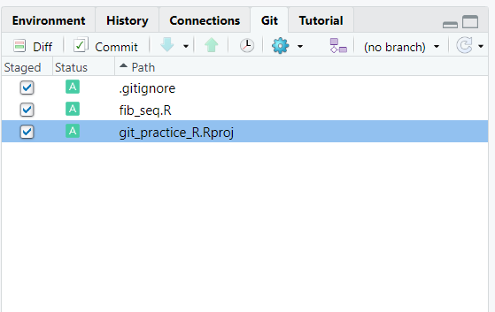
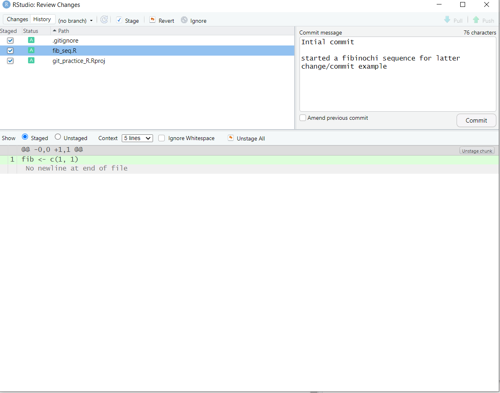

Appendix A — The RStudio Graphical User Interface
One problem with widespread adoption of Git at ADF&G is that there is no accepted standard for how to interact with Git. The options are GUI or shell/terminal. Shell/terminal is probably the best, if most intimidating. Everything you need to do can be done in the terminal and I’ll demonstrate that for the most important commands in the text that follows. In order to use the terminal effectively it helps to make one change to the Rstudio defaults by executing the following point and click commands: Tools>Terminal>Terminal Options…>(change initial directory to ‘project directory’). This change will ensure your terminal opens in the correct directory and save some unnecessary terminal prompts.
That said, Rstudio has a very rudimentary Git GUI that can save a lot of keystrokes for some simple commands. For this reason it’s my opinion that a combination of the terminal and the Rstudio GUi is the easiest approach. I will point out appropriate Rstudio GUI options when appropriate.
A.0.1 git init
if you are starting a brand new analysis creating a git repository at the same time you create your R studio project is easy: New Project>New Directory>New Project>(provide name, location and check ‘create git repository’. This sequence runs git init in the background while the RStudio project is created
A.0.2 git add
The Rstudio GUI makes this easier. You simply open the git pane and click the radio button next to each file you would like to add (under the staged column). You can verify Rstudio stage and git add do the same thing but running the it status command in the terminal.

A.0.3 git commit
Again, this process can be quite efficiently accomplished in the Rstudio GUI. In the Rstudio GUI you separate you commit message title and description buy leaving a blank line between the two messages in the commit window.

A.0.4 git log
In Rstudio, we view the commit history through the git tab (Diff>History)
Screenshot